Yuyun Tsao
Yuyun Tsao・跨域者「在無垠的宇宙裡提問，用藝術與哲學描繪彼方。」
我喜歡用藝術結合科技與哲思，探索這獨一無二的世界。
文學哲學數學藝術音樂設計程式設計機器人量子力學3D建模科學研究
 星凝
星凝
星凝
星凝
We start from the universe,
and read the future from every angle.
Two people exploring the world through design, technology and research. STARNING is Yuyun Tsao and Bingyang Chen.
See our work ↓ {{kk.timeline}}
{{kk.timeline}}{{tl.lead}}
{{kk.starmap}}
{{sm.lead}}
{{kk.work}}
{{kk.awards}}
{{summary}}
{{kk.prize}}
{{kk.journey}}
每一學期的學習成果與反思，記錄我們怎麼一步步長出自己的方向。
{{kk.journey}}
What we learned each semester and what we took from it — a record of how we found our own directions.
{{kk.about}}
STAR是星辰之光，NING是凝聚之力。
「星辰是宇宙的邏輯，凝結是思維的實體。在空間幾何、聲響哲學與認知邊界的交界之處，展開一場不設限的探索。」
高中三年，我們想一起探索世界。
「在無垠的宇宙裡提問，用藝術與哲學描繪彼方。」
我喜歡用藝術結合科技與哲思，探索這獨一無二的世界。
「在微小的細節裡探尋，用科技與雙手構築真實。」
我喜歡從生活細節中發掘問題，用機械結構與動手實作，把腦中的奇思妙想變成現實。
{{kk.about}}
STAR is the light of the stars; NING is the power of coming together.
“Stars are the logic of the universe; condensing is thought made real. Where spatial geometry, the philosophy of sound and the edges of cognition meet, we set out on an exploration without limits.”
Through high school, we want to explore the world together.
“I ask my questions in the boundless universe, and paint what lies beyond with art and philosophy.”
I love bringing art together with technology and philosophical thought to explore this one-of-a-kind world.
“I search within the smallest details, and build what is real with technology and my own hands.”
I love finding problems in the small details of daily life, and using mechanical structures and hands-on building to turn the wild ideas in my head into reality.

{{c.kick}}{{c.ask}}
starning1020@gmail.com© 2026 STARNING · {{c.members}}
{{c.top}}